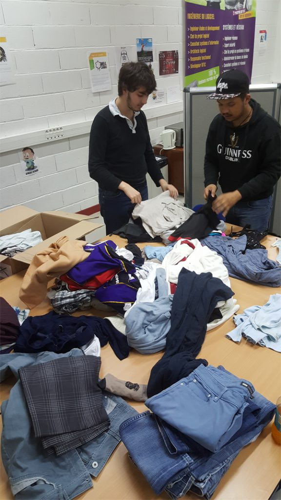

Collecte de vêtements pour les Resto du Coeur
Lors des projets étudiant d'INTECH, en équipe de 5 nous avons réalisé une collecte, et distribution
de vêtements.
Nous avons commencé la collecte au début mars, nous nous étions fixé un objectif de 150 vêtements à donner à une association caritative.
Fin mars, nous avons eu un 1er contact avec les Restos du cœur d’Ivry.
trouver un emplacement pour stocker ces cartons jusqu'au jour de la distribution,
et distribuer les vêtements le jour J.
La campagne de communication à durée 4 mois, il fallu créer une identité visuelle, et trouver un moyen pour attirer l'oeil sur nos affiche.
Nous avons trouvé un moyen simple, et efficace, qui a permis que les regards soient attiré sur nos affiches:
Les plastifier. Toutes les affiches étaient en papier standard, les plastifier permet de leur donner un effet plus sérieux et travaillé qu'une simple feuille de papier.
Notre seule crainte était de ne pas pouvoir distribuer l'ensemble des vêtements.

Nous avons commencé la collecte au début mars, nous nous étions fixé un objectif de 150 vêtements à donner à une association caritative.
Fin mars, nous avons eu un 1er contact avec les Restos du cœur d’Ivry.
Un défi logistique
Il a fallu se procurer des cartons pour rassembler et trier les vêtements,trouver un emplacement pour stocker ces cartons jusqu'au jour de la distribution,
et distribuer les vêtements le jour J.
Campagne de communication
La clé dans la réussite de ce projet était la communication, pour pousser les gens à passer à l'action.La campagne de communication à durée 4 mois, il fallu créer une identité visuelle, et trouver un moyen pour attirer l'oeil sur nos affiche.
Nous avons trouvé un moyen simple, et efficace, qui a permis que les regards soient attiré sur nos affiches:
Les plastifier. Toutes les affiches étaient en papier standard, les plastifier permet de leur donner un effet plus sérieux et travaillé qu'une simple feuille de papier.
Un objectif explosé
Notre objectif était de 150 vêtements, nous avons pu rassembler au total 1680 vêtements, ce qui est plus que 11 fois l'objectif initial !Notre seule crainte était de ne pas pouvoir distribuer l'ensemble des vêtements.